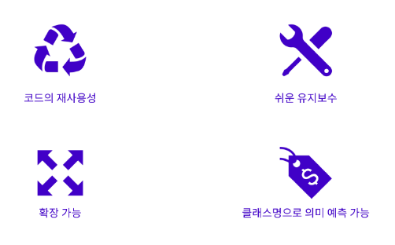

프로젝트의 규모나 복잡도가 점점 커지고 함께 작업해야 할 팀원 수도 많아짐에 따라 CSS를 작성하는 일관된 패턴이 없다는 것은 개발자들에게 가장 큰 걸림돌 중 하나였다.
또한 모바일이나 태블릿을 비롯한 다양한 디바이스들의 등장으로 웹사이트들이 다양한 디스플레이를 커버해야 하기 때문에 CSS는 더 복잡해지면서 CSS 작업을 효율적으로 하기 위해 구조화된 CSS의 필요성이 대두되면서 CSS를 구조화하는 방법에 대한 연구가 필요해졌다.
이러한 문제점들을 해결하기 위해 CSS 전처리기(CSS Preprocessor)라는 개념이 등장하였다.
CSS 전처리기(CSS Preprocessor)란 CSS가 구조적으로 작성될 수 있게 도움을 주는 도구이다.
CSS 전처리기(CSS Preprocessor) 자체만으로는 웹 서버가 인지하지 못하기 때문에 각 CSS 전처리기에 맞는 Compiler를 사용해야 하고 컴파일을 하게 되면 실제로 우리가 사용하는 CSS 문서로 변환한다.
이를 통해 CSS 파일들을 잘 구조화할 수 있게 되었고 최소한 CSS 파일을 몇 개의 작은 파일로 분리할 수 있는 방법이 생겼다.
CSS 전처리기 중에서 가장 유명한 SASS는 Syntactically Awesome Style Sheets의 약자로 CSS를 확장해 주는 스크립팅 언어로 SCSS(파일 확장자, .SCSS) 코드를 읽어서 전처리한 다음 컴파일해서 전역 CSS 번들 파일을 만들어 주는 전처리기의 역할을 한다.
즉, CSS를 만들어주는 언어로서 자바스크립트처럼 특정 속성의 값을 변수로 선언하여 필요한 곳에 선언된 변수를 적용할 수 있고 반복되는 코드를 한 번의 선언으로 여러 곳에서 재사용할 수 있도록 해 주는 등의 기능을 가졌다.
SASS가 "CSS의 구조화"를 해결해 주는 것의 장점보다 다른 문제들을 더 많이 만들어낸다는 것이 밝혀지고 CSS 전처리기의 문제를 보완하기 위해 BEM, OOCSS, SMACSS 같은 CSS 방법론이 대두되었다.
각각의 장단점이 있으나 결국 세 방법론 모두 코드의 재사용, 코드의 간결화, 코드의 확장성, 코드의 예측성이라는 지향점을 가지고 있다.
